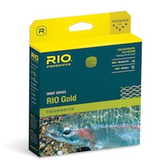
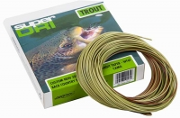
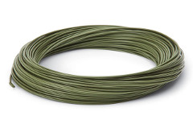
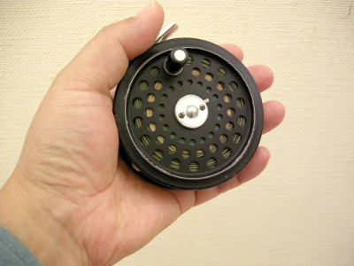

ティップス
ニュージーランド ティップス集 フライラインとフライリールの色について
大自然に囲まれた渓流や湖で、60cmを超える大物鱒の姿を目で確認してから釣るサイトフィッシングは、ニュージーランドにおけるフライフィッシングの最大の魅力と言えるのではないでしょうか？
このようなサイトフィッシングの場合、多くの状況下では水が澄んでおり、鱒は水面近くに居ます。こちらから鱒が見えるのですから、鱒の方からも釣り人の姿がよく見えると考えられます。そこで問題となるのが、フライラインとフライリールの色についてです。
まずフライラインの色は、濃緑かブラウン系をお勧めします。日本ではあまり売られていないのですが、RIO や Airflo、Cortland などのメーカーから濃緑色のフライラインが出ています。Airflo からは、先端部分が迷彩色となっているラインも販売されています。僕は長年、Cortland の ClearCreek というラインを使ってきました。暗緑色のラインです。現在では、444 Classic Spring Creek - Olive というモデルになっているようです。



ルアー釣りのようにまったくフォルスキャスト無しで、一投目からドンぴしゃのキャストができればいいのですが、フライの場合はそうも行きません。ラインを出し過ぎて、鱒の頭上をラインの影がかすめただけでも、用心深い大物鱒は姿を消してしまいます。
次にフライリールの色ですが、艶消しの黒色をお勧めします。これは銀色や金色のメタリックな色では、太陽光線が反射して、鱒に気づかれるのを防ぐためです。フライ釣りの場合、何度もフォルスキャストで腕（リール）を前後に動かすので、思わぬところで太陽光線が反射します。僕が初めてNZを訪れた1997年には、偶然ではありましたが黒色の Hardy Ultralite Disc #６を持って行ったのですが、フィッシングガイドのブリントさんも同じリールを使っていました。2010年に行った時も、湖畔のロッジの四方山話の中で、「リールの色は黒に限る」という話が出ました。

そこまで神経質にならなくても、という意見もあるかとは思いますが、あなたの一生涯の記憶となるような大物鱒を脅かしてしまう可能性をできる限り小さくするために、考慮してもらいたい問題です。特にブラウントラウトは神経質なので、ブラウンの多い南島での釣りでは、ラインとリールの色の選択は重要になるでしょう。
なお、秋口から冬場にかけての北島トンガリロ川などでの遡上鱒の釣りでは、これほどシビアになる必要は無いと思います。
ティップス 目次へ
サイトマップ
ホームへ
お問い合わせ